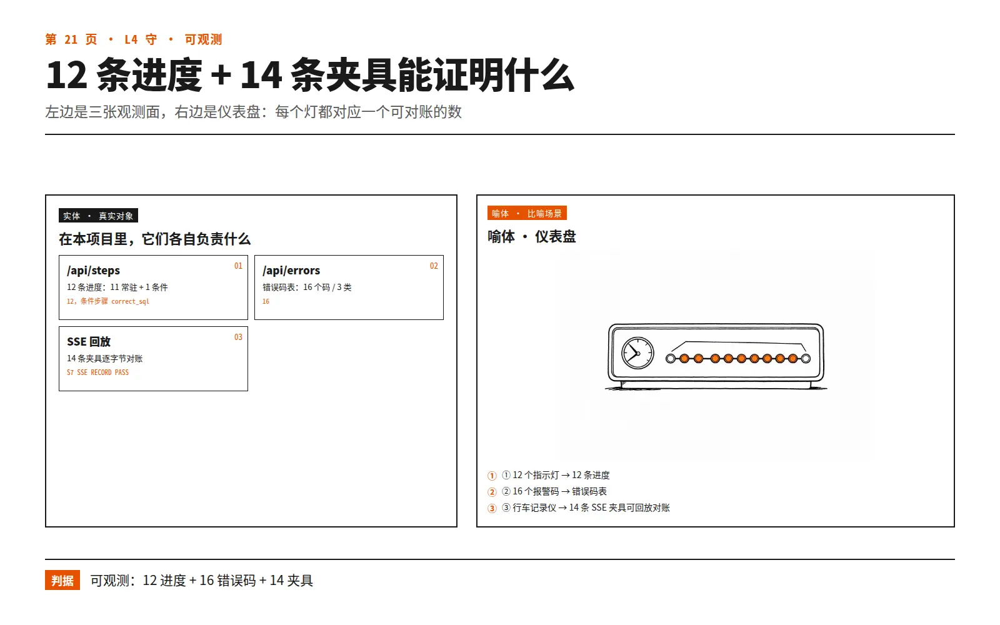
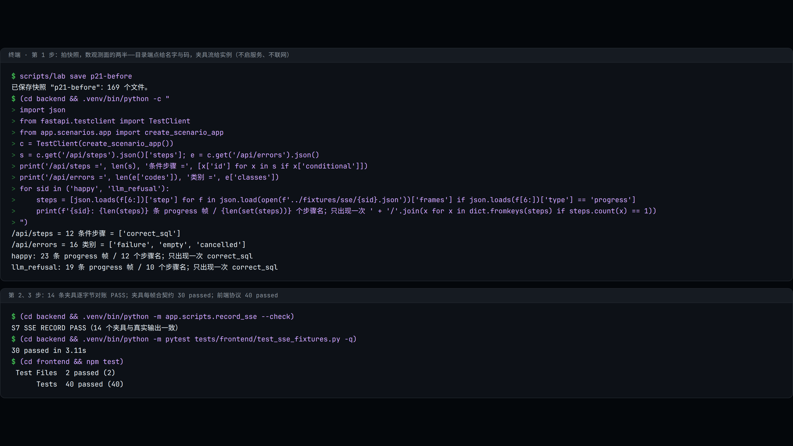

练本 · 阅读版（md 正典派生，改内容请改 tutorial/page-21.md）
第 21 页 · 守可观测：12 条进度 + 14 条夹具能证明什么
城市坐标 · L4 城市安防 · 调度大屏｜12 条进度 + 14 条夹具上大屏：哪一步慢、哪一条错，看得见。
前置：L4（守）第四页。第 18–20 页分别守账号、策略、取消；本页守可观测。
判据全离线：不启服务、不用 MySQL、
.env、模型 key、浏览器。在哪跑：命令都在仓库根目录、同一个终端里整段连续执行；括号是子 shell，跑完你还在仓库根目录。
本页目标：系统「现在在干什么、错在哪一步」靠哪三样证据说清，以及这些证据不能证明什么。
承接第 20 页：先跑
(cd system/backend && .venv/bin/python -m app.scripts.record_sse --check)，看到 PASS 再开始本页（第 20 页的拆一刀没还原时，本页第 2 步只会红cancelled.json一条，红法与下面那 10 条不同）。
这一页构建什么
给一次问数装上可对账的观测面，靠三样证据说清「现在在干什么、错在哪一步」：
- 进度：12 条有名字的进度（
system/contracts/steps.yaml的 12 个节点）。 - 目录端点：
/api/steps+/api/errors（12 步 / 16 码 / 3 类）。 - 回放夹具：14 条（9 个场景 + 取消是录制流，4 条手写）。
做完你拿到三条可重放的判据：夹具逐字节对账 PASS、夹具每帧合契约 30 passed、前端协议 40 passed。
心智模型：应用层可观测回答「现在在干什么、错在哪一步」，不回答「慢了吗、谁该报警」。

猜一猜
- happy 夹具共 24 帧，其中 23 条
progress只覆盖 12 个步骤名。12 个名字里，哪几个只出现 1 次、最容易漏？ - 14 条夹具里，有几条是「用今天的代码重录、逐字节对账」？
--check变绿能证明什么、不能证明什么？
动手
第 1 步：拍快照 + 数观测面的两半。 拆一刀要改 record_sse.py，先留退路（同名快照会被拒；文件数因工作区而异）。下面一个脚本把两半都数一遍：目录端点给名字与码，流给实例；不启服务、不联网：
toolbox/scripts/lab save p21-before
(cd system/backend && .venv/bin/python -c "
import json
from fastapi.testclient import TestClient
from app.scenarios.app import create_scenario_app
c = TestClient(create_scenario_app())
s = c.get('/api/steps').json()['steps']; e = c.get('/api/errors').json()
print('/api/steps =', len(s), '条件步骤 =', [x['id'] for x in s if x['conditional']])
print('/api/errors =', len(e['codes']), '类别 =', e['classes'])
for sid in ('happy', 'llm_refusal'):
steps = [json.loads(f[6:])['step'] for f in json.load(open(f'../fixtures/sse/{sid}.json'))['frames'] if json.loads(f[6:])['type'] == 'progress']
print(f'{sid}: {len(steps)} 条 progress 帧 / {len(set(steps))} 个步骤名；只出现一次 ' + '/'.join(x for x in dict.fromkeys(steps) if steps.count(x) == 1))
")
第 2 步：对账 14 条夹具。 record_sse --check 用今天的代码把 9 个场景 + 取消路径重录，和 system/fixtures/sse/ 里的文件逐字节比；4 条手写夹具只与源码常量比。退出码 0 才算过：
(cd system/backend && .venv/bin/python -m app.scripts.record_sse --check)
第 3 步：两组协议测试。 第一条命令验夹具每一帧都合契约（14 条 × 形状 + 帧契约）；第二条验前端解析器与结果渲染。
前提：system/backend/.venv 由第 0 页 make install 生成；system/frontend/node_modules 缺了就先 npm ci（要联网）。
lock 陷阱：system/frontend/package-lock.json 不在 lab 白名单，若被改就 git checkout -- system/frontend/package-lock.json 还原：
(cd system/backend && .venv/bin/python -m pytest tests/frontend/test_sse_fixtures.py -q)
(cd system/frontend && npm test)
第 4 步（可选）：make stage7。 前提：本机装了 uv 且 system/backend/.venv 依赖已同步；不需要 MySQL / 浏览器。6 段门禁（契约新鲜度、夹具对账、tests/frontend 45 条、前端 40 条、前端构建、全后端 843 条 = 813 passed + 30 skipped；本页第 3 步只跑其中 30 条），本机实测约 54 秒，末行 S7 PASS；不跑不影响前面判据：
make stage7
make stage7 已 uv run --frozen，不会改 system/backend/uv.lock；只有脚本里的裸 uv run（make stage3、make stage0-ui、make stage6-ui）或手敲 uv run 才会按本机镜像源重写它。
它不在白名单：lab reset 回显的“完全一致”只算白名单文件——仅当 git status 显示 lock 变脏时再 git checkout -- system/backend/uv.lock 单独还原（口径同第 15 / 19 页）。
你应该看到
第 1–3 步（# 开头是标注；耗时随机器变；下面是节选）：
# 第 1 步
已保存快照 "p21-before"：169 个文件。
/api/steps = 12 条件步骤 = ['correct_sql']
/api/errors = 16 类别 = ['failure', 'empty', 'cancelled']
happy: 23 条 progress 帧 / 12 个步骤名；只出现一次 correct_sql
llm_refusal: 19 条 progress 帧 / 10 个步骤名；只出现一次 correct_sql
# 第 2 步
S7 SSE RECORD PASS（14 个夹具与真实输出一致）
# 第 3 步
30 passed in 2.93s
Tests 40 passed (40)

对账
- 猜 1：
correct_sql，以及失败路径上根本没出现的步骤。 正常流里条件步骤只发一条status: "skipped"，没有 running+success——所以 happy 是 23 条 progress 帧（11 个节点各 2 条 + 1 条 skipped），不是 12×2。
拒答时更少：llm_refusal 只出现 10 个步骤名，validate_sql、run_sql 一条都没有。
怎么写判据：判据不能要求「12 个名字每次都出现」，只能要求：出现的名字都在目录里、条件步骤显式 skipped、流必有终态。最容易漏的不是跑过的步骤，是没跑又没人替它说话的步骤。
- 猜 2：10 条录制、4 条手写。 第 2 步的 PASS 里两种对账强度不同。
10 条录制（9 场景 + 取消）：与今天的代码逐字节一致。
4 条手写（pseudo_row/unknown_event/empty_rows/null_column）：只与源码常量一致，它们证明「前端能处理新后端永远不会产生的流」，合法性由第 3 步的契约测试兜底。
红名单：拆一刀的红名单恰好是那 10 条——绿线覆盖到哪、没覆盖到哪，一眼可见。
-
三件套各管什么。
-
progress事件说「现在在干什么」（步骤名 + 状态）。 /api/steps+/api/errors是名字与码的唯一来源（12 步 / 16 码 / 3 类），前端不硬编码。-
夹具是「怎么证明没漂移」——冻住一次真实字节流，以后每次改动逐字节对账。
-
稳定量 vs 变动量。
-
稳定：步骤名、顺序、状态、事件类型、错误码、错误类别。
- 变动：
duration_ms（每次测量都不同）、request_id（每次请求新生成）。
归一化只有两处：record_sse.py 把 duration_ms 固定成 12.5、request_id 从 detail 删掉。这不是作弊，是把变动量从判据里切出去：判据只能断言稳定量，否则今天绿明天红，绿线就没有意义。
-
与运维可观测的边界。 本仓库能看的只有这些：
-
/api/health、/api/steps、/api/errors； - SSE 里的
duration_ms/X-Request-Id； docker compose logs（容器层日志，不是应用的结构化日志）。
没有 metrics、没有追踪、没有结构化请求日志、没有告警。 别把流里的 duration_ms 当监控——它只发给浏览器，不落盘不聚合。
能回答「现在在干什么、错在哪一步」；不能回答「QPS / 错误率 / P99 / 慢在哪个服务」。运维级观测要另建（请求 ID + 每步耗时 + 错误码计数的最小底座还没建），不在本页。
你现在拥有：一条可被第三方重放的观测判据（14 条夹具 + 30 条契约测试 + 40 条协议测试），和一句可复用的话：可观测的边界，就是判据能断言什么、不能断言什么。
深入探讨：12 个节点就是一张 LangGraph 图
你刚对账的 12 个节点，在代码里是一张编译出来的图。
声明：system/contracts/steps.yaml 声明 12 个节点（stages 把它们按 10 步分组，是教学与验收的分组，SSE 仍每节点一条 progress）。
挂节点：system/backend/app/agent/graph.py:428 的 StateGraph(AgentState) 用 add_node 逐个挂上（8 个上下文节点 + 生成/校验/校正/执行各一，L430-436）。
串行主干：START → 8 个上下文节点串行 → generate_sql → validate_sql（L438-442）。
怎么分支：validate_sql 后面是条件边（L444-452）：通过 → run_sql、可重试 → correct_sql、否则 → END。
回边：correct_sql → validate_sql 是回边（L453），run_sql → END（L454）。
| 你前面验的证据 | 图里对应哪块 |
|---|---|
第 8 页：12 条 progress |
12 个图节点，一条进度对应一个节点 |
| 第 16 页：执行前的守卫 | validate_sql 节点里的 guard + policy |
| 第 17 页：一次重试的上限 | validate_sql 的条件边 → correct_sql，改完从回边再校验 |
为什么值得看：图把「节点顺序」和「回边」变成可枚举的结构，测试能直接拿编译后的节点集合对契约（system/backend/tests/test_s6_langgraph.py:96 断言节点数 = 12）——这正是 PRD 说的「LangGraph 多节点工作流」。
指针：完整图结构说明见 materials/design/book/chapters/20-s5-s8.md；system/backend/app/agent/graph.py:428-456；本页不要求新增截图。
拆一刀
打开 system/backend/app/scripts/record_sse.py，找到 _normalize（L195）。归一化是 L199–205 一整块：
- progress 分支 L201
payload["duration_ms"] = FIXED_DURATION_MS（12.5 在 L39 的常量里）； - error 分支 L205
detail.pop("request_id", None)。
怎么删：把这两个分支连同外层的 if/elif 头一起删掉，函数只剩解析与 json.dumps。
别删错：只删 L201 / L205 这两行赋值会缩进报错（“录制失败”），不是 10 条红；也别删整个函数。重跑第 2 步（退出码 1）：
(cd system/backend && .venv/bin/python -m app.scripts.record_sse --check)
FAIL: SSE 夹具与真实输出不同步：
- happy.json 与今天的真实输出不同步
# 共 10 条：9 个场景 + cancelled；4 条手写一条不红（节选）
- cancelled.json 与今天的真实输出不同步
请运行：cd system/backend && uv run python -m app.scripts.record_sse
为什么红：happy.json 里那几帧是 "duration_ms": 12.5，今天录出来首个 duration 帧约 3.3、11 个带 duration 的 progress 帧全与 12.5 不同（0 到几十毫秒不等，每次不同）。
另一处噪音：cancelled.json 的 detail 里还多了一个随机 32-hex 的 request_id（每次不同，形如 9d5221…）。
别照着提示去重录：把今天的噪音写死进夹具，明天还会红，判据就废了。用快照还原，再重跑第 2 步：
toolbox/scripts/lab reset p21-before --yes
(cd system/backend && .venv/bin/python -m app.scripts.record_sse --check | tail -1)
# 还原（节选；实际还会先打印“已先拍安全快照 pre-reset-…”等 8 行非空输出）
已恢复快照 "p21-before"：
覆盖 1 个文件（内容不同）
S7 SSE RECORD PASS（14 个夹具与真实输出一致）
结论：归一化不是作弊，它是把稳定量从变动量里切出来的那一刀。 拆掉它，判据立刻拿今天的耗时和请求 ID 去比昨天的——变红不是系统坏了，是判据开始断言它不该断言的东西。